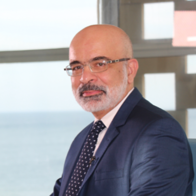
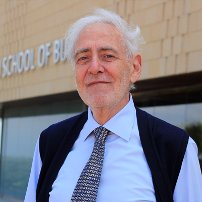

Pre-Program
- Psychometric Assessment
- Coaching Introduction
- Program Welcome
- Pre-Session Preparations
Advanced Management Program
+ $1000 Coaching

The AI revolution has fundamentally redrawn the boundaries of executive responsibility. It is no longer enough to lead digital transformation; senior leaders must now actively harmonize unprecedented AI capabilities with human-centric purpose and systemic organizational resilience with deep ethical responsibility.
The CEDAR Program, developed by the American University of Beirut, Suliman S. Olayan School of Business (OSB), is a learning experience designed specifically for Senior Management and Executives. This program bridges the gap between disruptive technological forces and the timeless demands of strategic clarity and cognitive precision. Over the course of this program, participants will master three interconnected pillars crucial to modern enterprise survival: Leadership in the AI World, Strategy, Judgement and Decision Making.
Our curriculum is structured into three distinct yet reinforcing learning blocks, carefully curated to build a multidimensional leadership identity:
Technology + Humanity
Lead an AI-centered culture grounded in ethics and
core values. Synthesize digital trends to prepare for a future where technology and humanity
coexist harmoniously.
Value + Resilience
Deconstruct the process of identifying market
opportunities and challenges, crafting compelling value propositions, and mitigating
high-stakes risks.
Cognitive Precision + Influence
Dive into the psychology of cognitive
biases that distort professional judgment. You will master the art of ethical influence:
steering organizational outcomes through empathy and evidence-based precision.
Acquire the agile leadership skills required in high-stakes transitions, complex digital transformations, and market volatility.
Walk away with concrete frameworks to optimize your organization's internal choice architecture.
Connect deeply with an elite cohort of cross‑functional Senior Management and Executives.


Lead an AI-centered culture grounded in ethics and core values. Synthesize digital trends to prepare for a future where technology and humanity coexist harmoniously.
Session 1Deconstruct the process of identifying market opportunities and challenges, crafting compelling value propositions, and mitigating high-stakes risks.
Session 2Dive into the psychology of cognitive biases that distort professional judgment. You will master the art of ethical influence: steering organizational outcomes through empathy and evidence-based precision.
Session 3This session introduces topics and tools that are central to purposeful and digital leadership. Participants will explore frameworks around ethical issues faced by managers and organizations as well as the latest findings on human behavior to inform ethical decisions and digital transformation strategies specifically involving AI. The course will cover case studies, insights from psychology and behavioral science, and a brief introduction to philosophical perspectives that are useful for leaders.
The module focuses on the fundamental understanding of strategy formulation and implementation. Participants will be introduced to what constitutes a strategy choice of how and where to compete to create and/or leverage value. The cases highlight that, for a company to have sustainable competitive advantage, the business strategy must drive the value chain design, as well as company processes and that in turn these must drive technical/information infrastructure in and across the firm.
This session will explore the psychological and social forces that derail our rational thinking and how often (and why) do we turn a blind eye to objective information. As such, throughout, participants will learn to manage our biases and those of others. Making decisions, even very simple ones, is a tricky business and we’re not very good at it. The session explores why we make many non-rational decisions due to many reasons such as lack of information, time, and cost constraints, among others.

Navigating identical challenges in today's complex corporate environment.
The KAED Program is a hybrid learning journey designed for forward-thinking leaders navigating an AI-centric, data-driven business landscape. The program empowers leaders to bridge the gap between digital transformation and human-centric leadership by combining emotional intelligence with digital governance and practical AI tools.

This program focuses on real-world AI applications in production, demand forecasting, inventory management, logistics optimization, and risk mitigation. Participants will learn how AI-driven systems shape modern supply chains and how to interpret their outputs to make informed strategic decisions.

This unique program equips family business leaders with tools and frameworks needed to design governance systems that manage complexity and ensure continuity without compromising family harmony. Topics include family governance structures, board composition, preserving family's wealth, planning succession, and managing conflicts.
Contact us to discuss how we can help you achieve your goals.